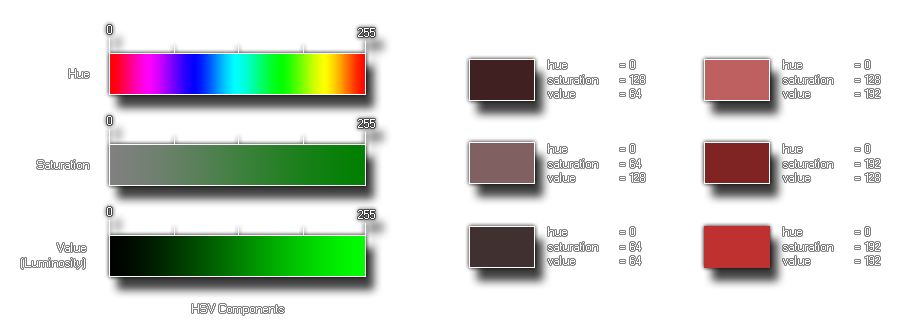

Syntax:
make_color_hsv(hue, sat, val);
| Argument | Description |
|---|---|
| hue | The hue of the color |
| sat | How saturated the color is |
| val | How dark the color is |
Returns : value
GameMaker:Studio provides this function (as well as others) to permit the user to make their own colors. This particular function takes three component parts, the hue, the staturation
and the value (also know as "luminosity") to create the color desired. These values are taken as being between 0 and 255 so you can make 16,777,216 (256*256*256) colors with this! Below you
can see an image of how these components look when separated :

The image on the left is a break-down of the individual components of the function, and then on the right is an illustration of how changing these components affects the end color. As you can see, even without
changing the hue (it stays at 0, red), we can dramatically change the color with the other two settings, with saturation making the color tone go from grey (0) to a pure tone (255), and with the value making it
go from darker (0) to lighter (255).
col = make_color_hsv(100, 145, 255);
The above code uses the function to create a color and store its value in the variable "col" for later use.